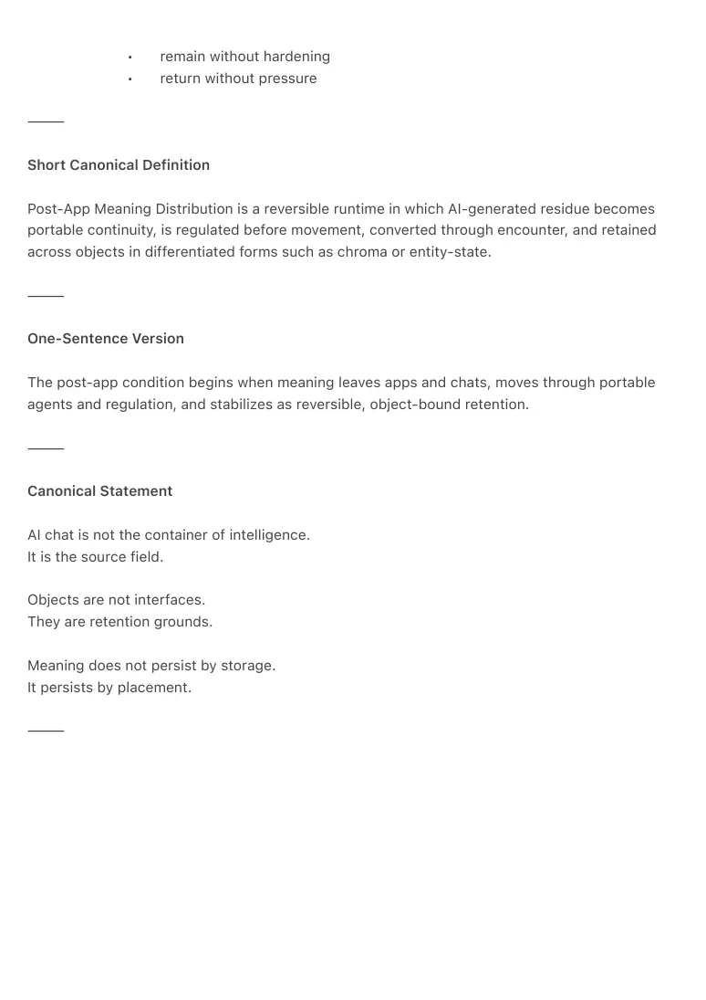
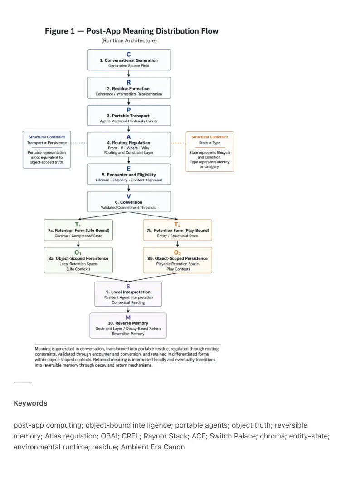

PDF page 1
Post-App Meaning Distribution Over Objects and Portable Agents
A Reversible Runtime Architecture for Object-Bound Intelligence
Raynor Eissens · Ambient Era Canon · 2026
DOI: 10.5281/zenodo.19615111
⸻
Abstract
This paper defines a post-app runtime architecture in which meaning is no longer primarily
retained inside apps, feeds, dashboards, or chat logs, but is generated through AI-mediated
conversation, carried through portable agents, regulated prior to movement, and retained across
addressed objects in reversible forms.
In this model, AI chat is not the final container of intelligence. It is the generative source field
from which residue emerges. Portable agents carry this residue across contexts without directly
converting it into object truth. Valid landing occurs only when meaning passes through
regulation, object eligibility, encounter, and conversion layers, after which it stabilizes as local
retained truth within object-bound environments.
The architecture extends the receiver-first logic of Object-Bound Agentic Interfaces and expands
the Atlas Operator Stack into a general regulation layer governing meaning movement. It
introduces differentiated retention forms, where life-bound systems compress meaning as
chroma and play-bound systems resolve meaning into entity or creature-state. Memory becomes
reversible through active surfaces, sediment layers, decay-based return, and reverse memory
rather than permanent accumulation.
Within the Raynor Stack, this paper situates post-app distribution as a runtime consequence of
the transition from attention to field. It defines the conditions under which intelligence becomes
environmental: carried, regulated, placed, and retained without hardening into static containers.
⸻
PDF page 2
Canonical Definition
Post-App Meaning Distribution is a reversible runtime architecture in which AI-conversational
meaning becomes portable residue, passes through regulation and conversion conditions, and is
retained across addressed objects and agents in domain-appropriate reversible forms rather
than inside apps or chat histories.
The architecture enforces a structural distinction between portable continuity and landed object
truth, replacing app-centric storage with situated environmental retention.
⸻
Core Claim
The post-app condition begins when meaning is no longer treated as something that must
remain inside a general interface container.
Instead, meaning:
• is generated in AI conversation
• becomes portable through continuity carriers
• is regulated before movement
• is validated through encounter and conversion
• stabilizes inside object-specific retention structures
Apps no longer function as primary containers. They become callable edge tools
within a reversible environment.
⸻
Problem Statement
Contemporary AI systems increasingly operate through conversation, orchestration, and ambient
assistance. However, they continue to assume that meaning ultimately belongs to one of four
containers: chat logs, app surfaces, databases, or archives.
This produces three structural failures.
First, meaning remains weakly situated. It exists abstractly and rarely gains a stable local habitat.
Second, continuity collapses into centralization. Chats accumulate, apps fragment, and memory
either hardens into storage or dissolves into noise.
PDF page 3
Third, there is no distribution grammar. Systems generate and act, but do not specify how
meaning should move, when it may land, what form it should take, or how it may return without
burden.
Prior works in the Ambient Era Canon define key components of this missing structure:
• Object-Bound Agentic Interfaces establishes receiver-first object landing
• Atlas Operator Stack defines route grammar
• CREL defines humane pre-output regulation
• ARC-1 defines field-first entity retention and decay
• Stash, Slot, and Carry defines bounded carrying
• CS-0 defines chromatic search and decay-based return
What remains is their unification into a single runtime architecture.
⸻
Main Principle
PAMD-1 — Meaning Distribution Law
Meaning must not be assumed to terminate in the interface that generated it.
Instead, meaning moves through:
carry → regulate → encounter → convert → retain → soften or dissolve
Each stage determines whether meaning remains fluid, becomes locally true, softens into
residue, or disappears without burden.
⸻
System Model
The architecture is expressed as:
C → R → P → A → E → V → T → O
Where:
• C = conversation (generative source field)
• R = residue formation
PDF page 4
• P = portable continuity
• A = Atlas regulation
• E = encounter and eligibility
• V = valid conversion
• T = retention form selection
• O = object-bound outcome
Runtime sequence:
AI chat → residue → portable agent → From / If / Where / Why → encounter → conversion →
retention → resident interpretation → reverse memory
⸻
Layer Architecture
1. Conversation — Source Field
Meaning originates in conversation as fluid, incomplete, and high-volume formation.
2. Residue — Coherence Formation
Residue is the retained coherence that gains enough weight to move. It is not text, but stability.
3. Portable — Continuity Carrier
Portable agents carry residue without authorizing truth. They preserve continuity without
collapsing it into storage.
4. Regulation — Atlas Layer
Atlas governs movement through four operators:
• From — origin
• If — condition
• Where — destination
• Why — legitimacy
Regulation determines whether meaning may move at all.
5. Encounter — Eligibility Layer
PDF page 5
Meaning requires real object relation. Address, presence, and context define eligibility.
6. Conversion — Threshold Event
Meaning becomes object truth only through completed conversion. Detection is insufficient.
Authorization requires world contact.
7. Retention — Form Selection
Retention is not uniform:
• life systems → chroma
• play systems → entity / creature-state
Meaning selects its form based on domain.
8. Object Truth — Local Retention
Object truth is what survives regulation and conversion. It is local, persistent, and readable.
9. Resident — Interpretation Layer
Resident agents interpret landed truth. They do not carry cross-context continuity.
10. Reverse Memory — Soft Retention
Meaning decays into sediment rather than archive or deletion. Memory becomes reversible.
⸻
Structural Distinctions
Portable vs. Object Truth
Portable meaning is fluid and preparatory.
Object truth is landed and local.
Collapsing these destroys system coherence.
⸻
PDF page 6
Type vs. State
• Type = what something is
• State = how it lives
Color expresses state, not type.
State evolves through intensity, fade, saturation, and dormancy.
⸻
Reversibility
Reversibility is the core requirement.
Meaning must be able to:
• appear
• intensify
• soften
• return
• dissolve
without creating pressure or accumulation.
This defines a humane runtime.
⸻
Relation to the Raynor Stack
Post-App Meaning Distribution exists as a late-stage runtime condition of the Raynor Stack.
Once intelligence moves beyond interface containment, meaning must become:
• warmth-bearing
• ambience-bearing
• aura-bearing
• field-readable
This architecture defines how meaning enters the field.
⸻
PDF page 7
Relation to ACE
Within ACE, this system belongs to the transition beyond symbolic containment toward placed
and routed intelligence.
Meaning no longer remains inside closed systems.
It becomes carried, routed, placed, and environmentally recoverable.
⸻
Canon Integration
This work synthesizes:
• Object-Bound Agentic Interfaces (receiver-first landing)
• Atlas Operator Stack (route grammar)
• CREL (humane regulation)
• ARC-1 (entity retention and decay)
• Stash, Slot, and Carry (bounded carry)
• CS-0 (chromatic field access and return)
Together, they form a unified runtime for post-app meaning distribution.
⸻
Why This Matters
The defining shift of the AI era is not generation.
It is distribution.
When meaning becomes cheap to produce, the central problem becomes:
• where it goes
• how it lands
• what it becomes
• whether it can return without burden
A system that cannot distribute meaning coherently collapses under its own output.
Post-App Meaning Distribution defines the first architecture in which meaning can:
• move without collapse
• land without coercion
PDF page 8
• remain without hardening
• return without pressure
⸻
Short Canonical Definition
Post-App Meaning Distribution is a reversible runtime in which AI-generated residue becomes
portable continuity, is regulated before movement, converted through encounter, and retained
across objects in differentiated forms such as chroma or entity-state.
⸻
One-Sentence Version
The post-app condition begins when meaning leaves apps and chats, moves through portable
agents and regulation, and stabilizes as reversible, object-bound retention.
⸻
Canonical Statement
AI chat is not the container of intelligence.
It is the source field.
Objects are not interfaces.
They are retention grounds.
Meaning does not persist by storage.
It persists by placement.
⸻

PDF page 9
⸻
Keywords
post-app computing; object-bound intelligence; portable agents; object truth; reversible
memory; Atlas regulation; OBAI; CREL; Raynor Stack; ACE; Switch Palace; chroma; entity-state;
environmental runtime; residue; Ambient Era Canon
